Mundial FIFA - BRASIL 2014
Noticias
TERCER PUESTO 12 DE Julio de 2014
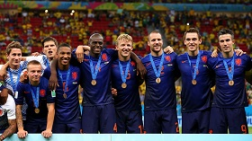
Holanda goleó a Brasil 3 a 0 y consiguió el tercer lugar
Holanda consiguió ante Brasil la victoria, la que da el honor de ser tercero de la Copa Mundial, gracias a los goles de Robin van Persie, Daley Blind y Georginio Wijnaldum.
CUARTOS 4 DE Julio de 2014
Brasil ganó 2 a 1 y clasifico a semifinales
Brasil obtuvo la clasificación para semifinales de la Copa Mundial al imponerse por 2-1 a Colombia, con goles de David Luiz y Thiago Silva,
descontó para Colombia James Rodríguez de penal,
pero la confirmación de la grave lesión que ha sufrido su principal estrella ha ensombrecido la alegría por el pase.
Neymar fue trasladado al Hospital Sao Carlos de Fortaleza,donde se confirmó su fractura de la tercera vértebra lumbar.
OCTAVOS 1 DE Julio de 2014
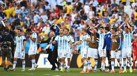
Argentina con gol de Di Maria a los 118m logra el pasaje a cuartos
El gol de Ángel di María en el alargue después de un pase de Lionel Messi puso punto y final al sufrimiento de Argentina ante Suiza,
que estuvo a escasos minutos de llevar el encuentro de octavos a la tanda de penales.
OCTAVOS 29 DE Junio de 2014
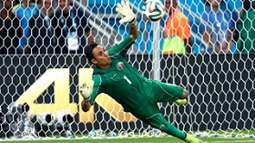
Costa Rica se mete a 4tos. tras vencer a Grecia por penales
Tras una lucha de 120 minutos el desenlace tuvo llegar desde los 11 pasos. Keylor Navas de gran actuación tapó el penal decisivo a Gekas.
Los goles del partido habían sido de Bryan Ruiz a los 32 y el agónico empate para Grecia de Sokratis a los 90m., contra una Costa Rica que había sufrido la
expulsión de óscar Duarte a los 66m. por doble amarilla.
OCTAVOS 28 DE Junio de 2014
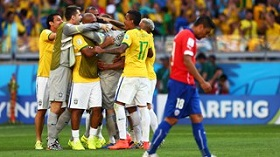
Julio César Atajó dos penales y clasifica Brasil a cuartos
El arquero Julio César se transformó hoy en héroe de Brasil al contener dos penales en la definición por penales ante Chile (3-2)
y darle al conjunto local su angustiosa clasificación a los cuartos de final del Mundial.Luego de igualar en un tanto en los 120 minutos reglamentarios,
el arquero contuvo los disparos de Mauricio Pinilla y Alexis Sánchez. El poste, además, rechazó el de Gonzalo Jara.
En el minuto 18 un centro conectado por David Luiz, con complicidad de Gonzalo Jara,1 a 0 Brasil.
En el minuto 32, un lateral derivó el balón en Eduardo Vargas, que envió un centro atrás para que Alexis Sánchez,
con remate cruzado antes del cierre de Thaigo Silva, estableciera el 1 a 1.
De esta manera se fue extinguiendo el tiempo regular.
SEMIFINAL 9 DE Julio de 2014
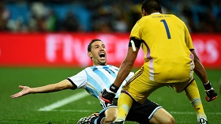
Argentina ganó 4 a 2 a Holanda por penales
El arquero de Argentina, Sergio Romero, detuvo dos penales a Holanda y llevó a la Albiceleste a la final del Mundial, en la que se medirá con Alemania.
Fue victoria 4-2 en la definición desde el punto penal después de que acabasen los 120 minutos sin goles.
CUARTOS 5 DE Julio de 2014
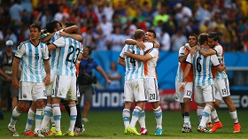
Argentina venció 1 a 0 a Bélgica y se metió en senifinales
Argentina le ganó a Bélgica por un golazo de fuera del area de Gonzalo Hicuaín a los 8m. y se metió en semifinales después de 25 años
OCTAVOS 1 DE Julio de 2014
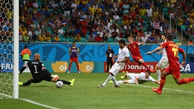
Bélgica superó a USA en alargue 2 a 1
Bélgica y USA dejaron las emociones para el alargue luego de terminar el tiempo reglamentario con un empate 0-0.
Romelu Lukaku, quien entró para disputar los 30 minutos adicionales, resultó ser el hombre clave de Bélgica al crear la oportunidad para que De Bruyne abriera el marcador y anotar el 2-0.
Por parte de USA, que estuvo muy cerca de sacar el empate, descontó Green.
OCTAVOS 30 DE Junio de 2014
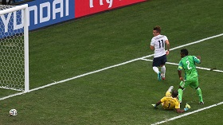
Francia ganó 2 a 0 a Nigeria y avanzó a cuartos de final
Francia sufrió demasiado para batir a Nigeria y superar a su portero Enyeama,
pero aprovechó los únicos dos errores del guardameta africano para anotar y avanzar a los cuartos de final.
La presión fue entonces toda gala y finalmente se desmoronó en el minuto 79 con un cabezazo de Pogba tras un mal despeje del propio portero.
En el minuto 90, Griezzmann, que había ingresado por Giroud, se adelantó al portero
OCTAVOS 28 DE Junio de 2014
Colombia se impuso a Uruguay con dos goles James Rodríguez
Dos goles de James Rodríguez, el primero a los 28m. con un golazo y otro a los 50m pusieron a Colombia en los cuartos de final de Mundial,
un lugar jamás alcanzado en su historia y en el que le espera Brasil.
SEMIFINAL 8 DE Julio de 2014
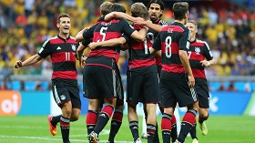
Alemania clasificó a la final con una goleada 7 a 1 a Brasil
Brasil sufrió el peor revés en su larga y dorada historia mundialista y en su propio país, ante un adversario superior como Alemania
al que derrotó por primera vez en un partido oficial. Los goles fueron de Thomas Muller a los 11m.,Miroslav Klose a los 23m., Toni Kross a los 24m. y 26m.,
Sami Khedira a los 29m., André Schurrle a los 69 y 79m. descontando Oscar a los 90m.
CUARTOS 5 DE Julio de 2014
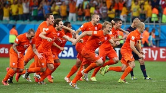
Holanda ganó por penales 4 a 3
Costa Rica aguantó con una sólida defensa y una actuación sobresaliente de su arquero Keilor Navas y los palos que salvaron a su equipo.
En la tanda de penales el golero Tim Krul contuvó dos penales este que había ingresado a los 120m del alargue.
CUARTOS 4 DE Julio de 2014
Alemania venció a Francia 1 a 0 y clasificó a semifinales
Un gol de cabeza de Mats Hummles le alzcanzó a Alemania para vencer a Francia por 1-0 y convertirse en el primer semifinalista.
Así, los alemanes se transformaron en el primer país en alcanzar cuatro semifinales consecutivas en la historia del Mundial.
OCTAVOS 30 DE Junio de 2014
Alemania sufrió y venció 2-1 a Argelia en suplementario
Alemania, sufrió para eliminar a Argelia (2-1), que aguantó hasta la prórroga un partido que dominó
en muchas fases y que terminó con dos goles de André Schurrle y Mesut Ozil y
que no obstante se le complicó hasta el último instante, tras el gol de Abdoulmene Djabou.
OCTAVOS 29 DE Junio de 2014
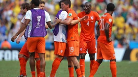
Holanda venció a México y le quitó el sueño de pasar por primera vez a cuartos
Finalmente, México se quedó a cuatro minutos de hacer historia. Ganaba 1-0, sucumbe 1-2.A los 48m. aparace en un gran jugada individual y con
un zapatado de Giovani Dos Santos la pelota se mete contra el palo 1 a 0 México.Y al 88' llegaría un zapatazo de Sneijder , que entra a la derecha de Ochoa para el 1-1,
y a los 92, Proensa decreta penal en un pisotón de Rafa Márquez sobre Robben. Huntelar no perdona. 2-1.